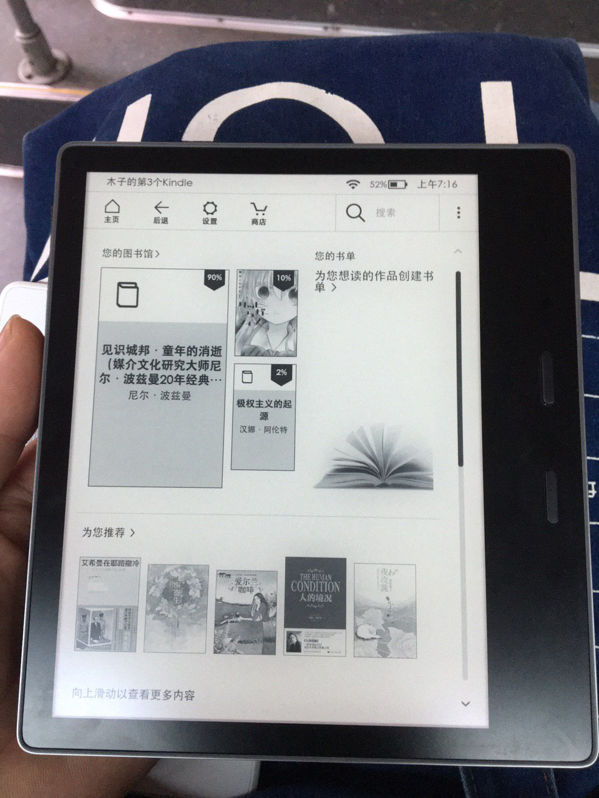
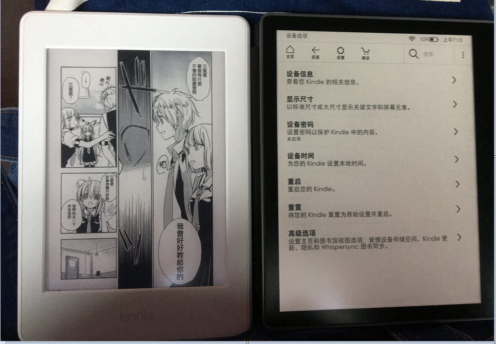
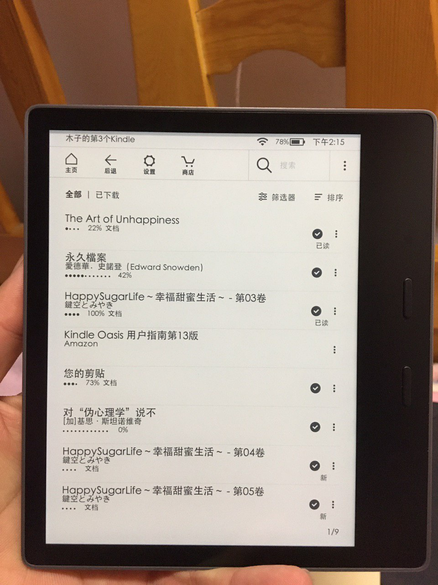
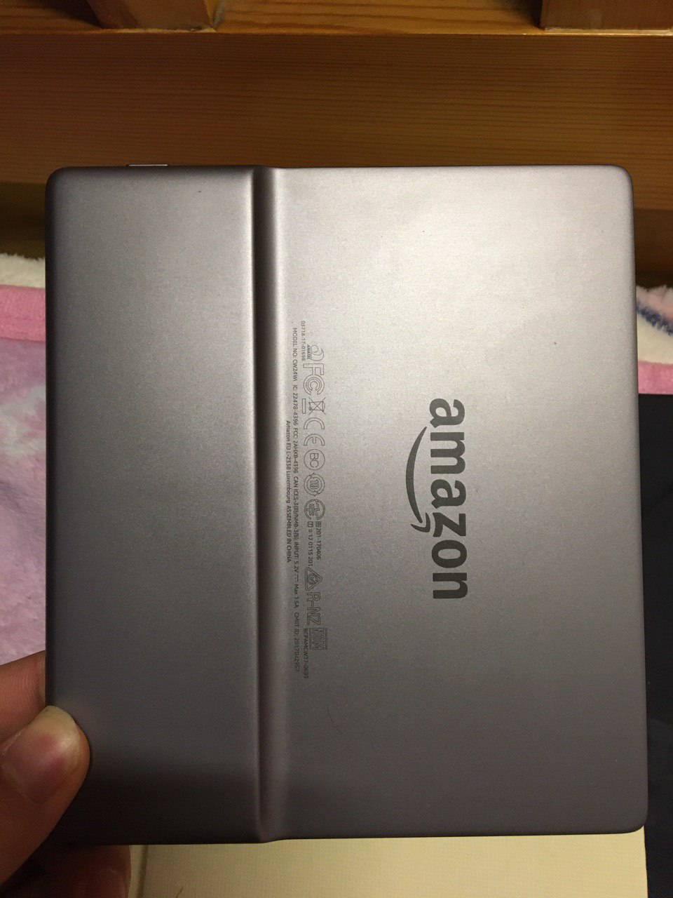
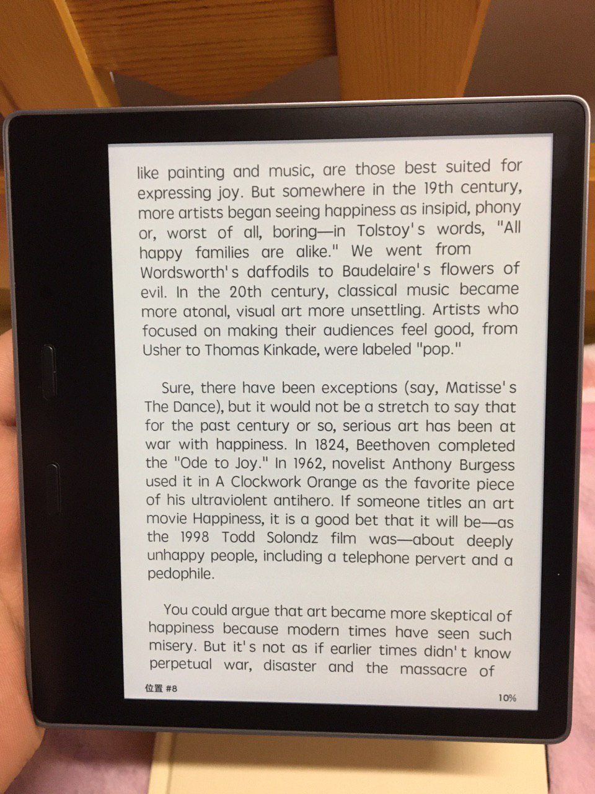
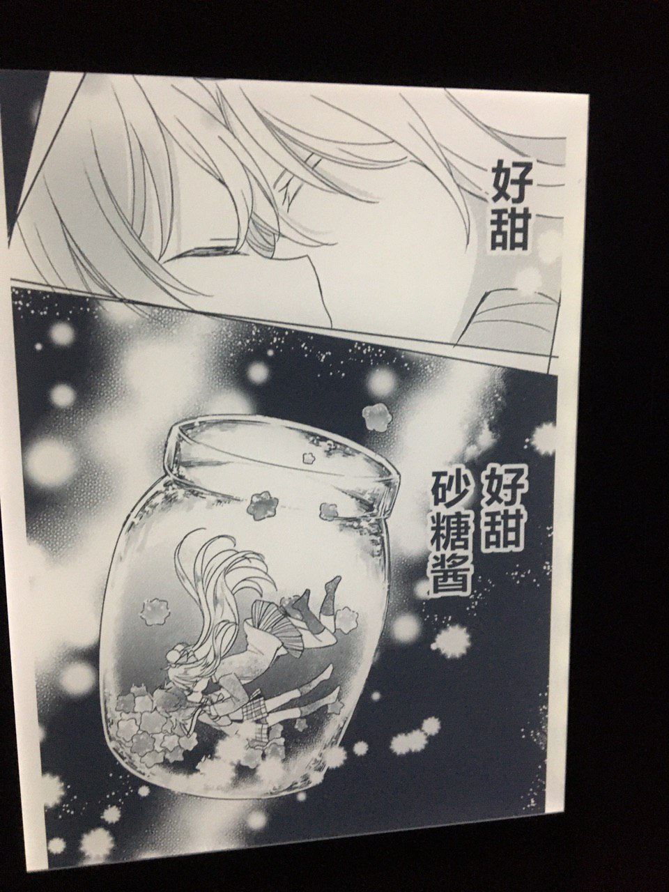
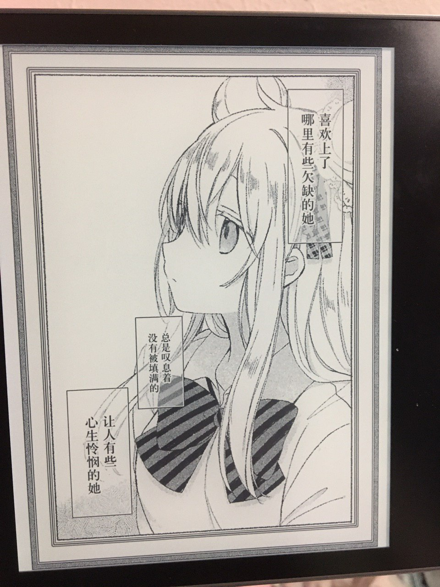
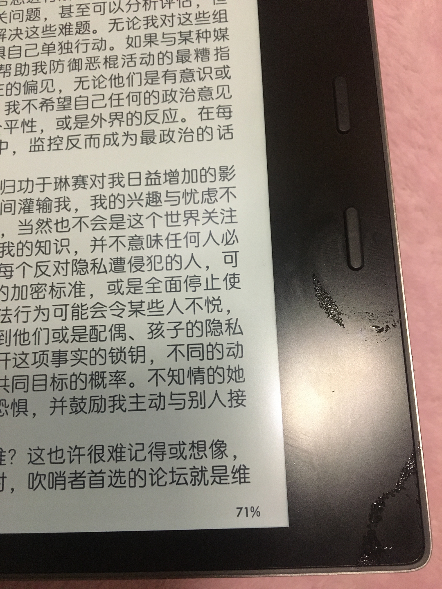

更新日志
- 2019-12-01 初稿
- 未完成、更新中
历史原因
nook2
我第一个电纸书是巴诺的 nook2 ，是我高三的时候买的。那时候折腾这个电纸书可费了不少劲。
当时还是 nook2 能刷成 Android 2.1 ，之后还能安装 QQ ，浏览器，冷阅 coolreader 。对，当时在 nook2 上最好用的阅读器就是 coolreader 冷阅。系统默默改制后还支持全局刷新和局部刷新。总之折腾起来很爽，虽然当时还是 Android 2.1 但运行个 QQ ，浏览器什么的都不在话下。达不到流畅但能用😂。之后 nook2 送给了我姐。后来直到 2017 年才再一次买电纸书。期间都是买纸质书或者找 PDF 资源看。


使用感受
我觉着但是
Kindle 入门版
自从上大学以来一直想买个 Kindle 来看，但学生时代嘛，自己赚的钱还不够生活费，所以只好在心里种草。直到 2018 年 5 月份的时候，我在读书月的时候参加的第二次校园十佳读者活动，被评为了十佳读者之一。那一年我在我们学校的借阅量排在全校前十，进馆次数全校第二😂。所以就很轻轻松松地获奖了。奖品是新华书店的代金券 400 元。正好我市的新华书店也卖 Kindle ，想了想 400 块钱的代金券自己再加两百块钱就能买到 Kindle 了，巨爽，所以就下狠心买了 Kindle 入门版。第一次拿到 Kindle 的那一刻，心情激动死了。
kindle 入门的使用体验就是能用，对、仅仅是能用而已。没有背光知识和白天或者光线下看，到了夜间就成瞎子了。
Kindle Paperwhite3
Kindle 入门版使用了大概一个多月的时间，在此期间看完了《数学女孩》三部以及《数学史》等几本书。因为姐姐要去欧洲教学一年，在那里买书不方便，所以就把 kindle 入门版给了我姐。kindle 入门版送给我姐以后我就接着和以前一样在图书馆里看纸质书。因为图书月活动我推荐给图书馆 100 多本书如今都已经买到并入馆了。所以这段时间一直在图书馆里看纸质书。没有 kindle 的那段时间里总感觉缺少点什么，到九月份开学的时候想了想要不要再买个 kindle ？用花呗分期 12 期免息买 Kindle Paperwhite3 每个月才 80 多块钱 ，感觉还可以啊。所以在九月份开学的时候又下决定买了 Kindle Paperwhite3 。
Kindle Paperwhite3 使用体验就是已经达到够用的水准了，看书和看漫画都不在话下😂。
需求分析
需求
工作之后，开始有了微薄的收入，开始渐渐有了一些积蓄，还了一半的助学贷款，都二十好几的人了，实在没脸让家人帮我还贷款了。加上上个月”加班“多挣了点，准备买点东西提升一下自己的幸福感。对于现在的我来说，买房？首付的十之一都还没攒到，别说厕所，连块地板砖大小的面积都买不起。
我是小有成就，我是有点小积蓄，但是这有什么用？在一线城市，一座房子至少 100万+ 才能买的下吧。生于穷人家的孩子总是在体验同龄人都在毕业游而我却要为生活而奔波的落差感。与其这么辛苦，不如早日享受。无论我再怎么勤俭节约，努力工作赚外快，我知道我这辈子注定也买不起 100万+ 的房子。
贷款买房？想想以后一个月的工资要有一半来还房贷，我实在无法接受。最起码我现在虽然住在一间小破房了，但我的工资 18 倍于我的房租。我不想牺牲快乐和自由去换一套房。原本生活中的必需品，此时却变成奢侈品。反正既然也买不起房，那就不如享受，人生就是这样，在自己的承受范围内，买一些自己喜欢的东西。
我不是圣人君子，我也是有物欲的人，甚至我更加贪婪，占有欲更强。对于目前的我来讲现在最需要升级的设备就是 Kindle Paperwhite3 了。虽然使用 Kindle Paperwhite3 已经一年多了，但它用来看书的体验仅仅够用，还没达到我满意的程度。尤其是拿来看漫画的时候，更是捉襟见肘，所以有必要升级一下啦。Kindle Paperwhite3 没有物理翻页键，翻页起来有时回失灵。就是你想翻回上一页的时候死活翻不回去，很僵硬的问题。其次就是屏幕尺寸有点小，看漫画的时候需要仔细盯着眼看一些比较小的字体。
其他没啥想要的，三月份的时候给姐借了点钱买了个二手的 ThinkPad Yoga 12 笔记本，因工作需要。六月份的用第一份工资加上在在校时勤工俭学赚的 1200 块钱凑一起组装了台 AMD R5 2600 😂 台式机。暑假的时候老姐把她用了好几年的 iPhone 6s 给了我，在我手里接着续命。目前来看没啥要买的，就缺个 kindle Oasis 了。
为什么不要买房呢
想必大多数人的回答都是两个字 结婚 ，没有一套房子丈母娘也肯定不愿意。没钱买房子难道要贷款买房子嘛？首付我都付不起，更不要提还房贷了。假如一对夫妻每个月的工资都要有三分之一以上用来还房贷，这样的生活我是无法接受的。何况我又不想谈恋爱更不想结婚。
为什么不要结婚呢
结婚生子，拥有一个属于自己的家庭，这是每个正常人的追求，是每个正常人的生活。
但我不想要孩子，恕我自私了、，我并不觉着拥有一个孩子是多么幸福的事情。对于我开说养育孩子是是一件麻烦事儿，又要照顾孩子，又要给孩子上学什么的。没有拿到工作城市的户口还要借读或者去老家上学。老家那种国家级贫困县，教育水平和资源及其低劣。反正我是绝对不会让我的孩子再走一遍我所走过的路。
尤其是看到当今的国内的教育让我气愤的不得了。小学生都开始强制要求学习宪法，都洗脑教育唱赞歌。从小就灌输这种红色教育，我是绝对无法接受，绝对，绝对不能接受所谓的红色教、爱国教育。在我看来国内的中小学阶段的爱国教育都是扭曲的，都是用来给当权者唱赞歌的，所以我是绝对我不能让我的孩子接受这样的教育。
所以，我是绝对不会在国内结婚生子，绝对不会让我的孩子接受这种扭曲的教育。我不结婚所以就再也不用担心买房的问题，用剩下来的钱买一些自己喜欢的东西，让自己一个人过的开心一些。
怎么买
在购买之前我做足了调查，甚至有表格来分析性价比😂。当时决定要在淘宝上买个美版 Kindle Oasis2 2017。虽然 2019 年已经推出了 Kindle Oasis3 2019。我觉着升级的性价比极低，Kindle Oasis3 2019 比 Kindle Oasis2 2017 硬件上只多了几个 LED 灯而已。尺寸、内存、处理器、存储等等都几乎无差别。所以说 Kindle Oasis2 性价是不错滴。
美亚
在黑五当天美亚上Kindle Oasis 3 的价格是174.99美元（人民幣約1230元），相当诱人滴。但美亚上没无法直邮，只能转运。而转运的话更为麻烦，费时费心费力。到手破损损坏的话处理起来更为麻烦。所以我就放弃了在美亚上购买。况且我也实在等不了十几天😂。而且自己买从美亚上买和在淘宝上买美版的区别不大的，都无法在国内享受保修。收到后出现坏点的话退换货成本极大，几乎无法退换货。淘宝上还能多加 20 块钱买个坏点险，如果出现四个以上的坏点的话免费换新，四个以内的话赔偿 40 块钱。
穷人的世界捡个垃圾都要做个表格分析一下性价比。
— 502 (@muzi_ii) November 27, 2019
目前当务之急是把手头的 Kindle Paperwhite3 换到 Kindle Oasis 2，因为自从拿来看漫画就觉着 Kindle Paperwhite3 不够用了😂。
至于手机？等过几年再说吧，手头的 6s 还能续命接着用几年滴。毕竟每天 kindle 的使用时间(4h)三倍于手机。 pic.twitter.com/EUGhXBZC7A
为什么买二手而不买未拆封美版？
如果买国行的话，正品价格最低是 2399 ，而且依照 kindle 千年不降价的作风，对于咱来说买国行实在是买不起。如果你想买国行的话推荐淘宝上的梅先生的 kindle 店买。我上一个 Kindle Paperwhite3 就是在那里买的。
其实刚开始我是想买美版 Kindle Oasis2 的，淘宝上 1500 左右就能买到，如果自己在美亚上买的话加上转运费和税费价格也少不那里去。无论是在淘宝上还是美亚上买美版的 Kindle 都有一个共同点，退换货成本极大。淘宝上未拆封的 kindle ，买来拆封后是无法退货的，即便是有问题的机器那也算你倒霉无法退货。而在美亚上买，你邮寄回美国的运费又负担不起。
闲鱼捡垃圾
综上决定在闲鱼上买，在咸鱼上搜了一下同城，正好找到一个卖家 。国行 Kindle Oasis2 8 GB 带官方 199￥ 的皮套，总价格 1280￥。和卖家沟通好第二天下午面交。😂第二天很顺利地完成了 PY 交易，卖家给便宜了 30￥，最终以 1250￥ 的价格买到手了 Kindle Oasis2。
关于容量
建议买 8 GB，你看书的话根本不需要 32 GB。两者价格相差 200 块钱，而仅仅多了 20 GB 的容量，性价比实在太低。 kindle 适合用来看书而不是用来存书，32 GB 的书你看十年都看不完😂，即便是 8GB 的容量也很难看完。所以没必要贪多，买 8 GB 足够。省出来那两百块钱订阅两年的 Kindle Unlimited 会员都要比多出那 20GB 的存储空间性价比高的多。
开箱
在公交车上拍照开箱😂









看漫画




总体感受
Kindle Oasis2 无论在尺寸还是在速度上已经满足我了，物理翻页键取代触屏翻页也方便多了。以前使用 Kindle Paperwhite3 看书的时候经常误触，按回退不知怎么地就翻到下一页。物理键取代触摸屏幕翻页效率和准确度上那是一天地上跑的和一个天上飞的区别😂。如果 Kindle Paperwhite3 能有个物理翻页键就完美无缺了。
但美中不足也有一些瑕疵，其中最大的问题就是 Kindle Oasis2 的电池太不耐用了，现在基本上是三天一充，而 Kindle Paperwhite3 一周一充。😥
另一个问题就是由于 KO2 是金属机身，冬天躲被窝里看书的时候手汗会留在上面🙃。但瑕不掩瑜，瑕不掩瑜😂

事后留下了一些不明液体🙃？其实是手汗😂